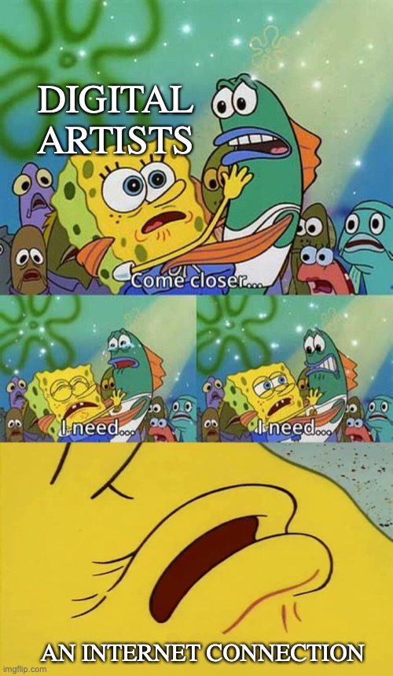
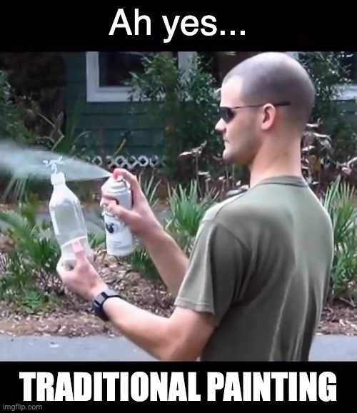

I believe memes to be the precursor to the age of digital art. They're the first easily accessible art form created for the internet, by the internet. The first true net art, something anyone can do.
Find the link to move to the next page, I'm probably going to forget where I put it by the time this gets done so good luck.
God it's so hard to read all this text with such freaked colors dancing around the screen , hmmm.... wonder if one of those normie physical art mediums could do this? Ohhhh it's a real quandry. It might take years of research to figure that one out.
 